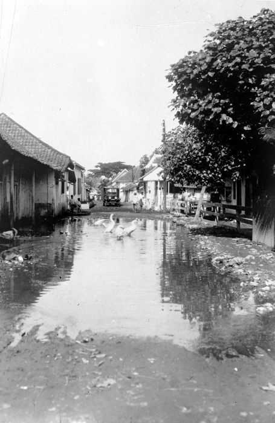

Restoring Eco-Environments to Maintain Beautiful Urban Maspati’s Native-culture
Kampoeng LawasMaspati
Heritage Experience | Surabaya
Sebuah kampung tua yang masih ditinggali, 500 meter dari Tugu Pahlawan. Di gang-gangnya, rumah 1907, sekolah rakyat, dan cerita Pertempuran Surabaya hidup berdampingan dengan warganya.
Kampung yang masih bernapas
Maspati bukan museum. Warga masih tinggal di sini, menuntun motornya di gang, dan menyapa “amit” saat berpapasan.
About MaspatiLima jejak sejarah
Dari makam sesepuh pendiri kampung hingga rumah yang menjadi markas pejuang pada 1945, semuanya bisa dijelajahi dengan berjalan kaki.
Explore HeritageHijau dari warga sendiri
Tanaman toga mengisi pot di sepanjang gang, dan air bekas olahan warga dipakai lagi untuk menyiramnya.
Our ImpactLawas berarti lama. Di sini, yang lama dirawat, bukan diganti.


Tentang kami
Dirawat warga, dikelola bersama
Kampung Lawas Maspati diresmikan sebagai kampung wisata pada 24 Januari 2016. Letaknya di RW VI Kecamatan Bubutan, di antara Jalan Tembaan, Jalan Penghela, dan Jalan Bubutan. CV Reembun Nusantara mengelola pengalaman wisatanya bersama warga, agar kunjungan ikut menjaga lingkungan dan budaya asli kampung ini.
Find your favorite
Featured Experience di Kampung Lawas


Dari atap sebuah rumah di Maspati, pejuang pernah mengamati pergerakan musuh pada 1945. Di dapur sebuah pabrik roti, makanan untuk mereka dimasak bersama.
Kampung ini tidak hanya menyimpan bangunan tua. Ia menyimpan cara hidup: gotong royong, sapaan di gang, dan rasa saling memiliki yang diwariskan.
“Lawas ituIngatan Kota”
Upcoming events
Agenda terdekat
Tradisi warga dan program budaya yang bisa kamu ikuti di Maspati.
Book now
Satu pass untuk masuk ke cerita Maspati
Pilih pengalaman, tentukan tanggal, lalu tunjukkan QR e-ticket saat tiba. Tiket masuk Rp5.000 dengan gratis keychain, Sabtu malam Rp15.000 sudah termasuk Cultural Night.